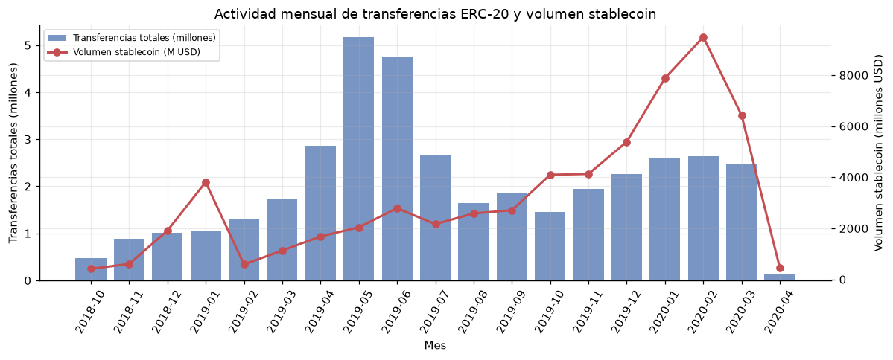
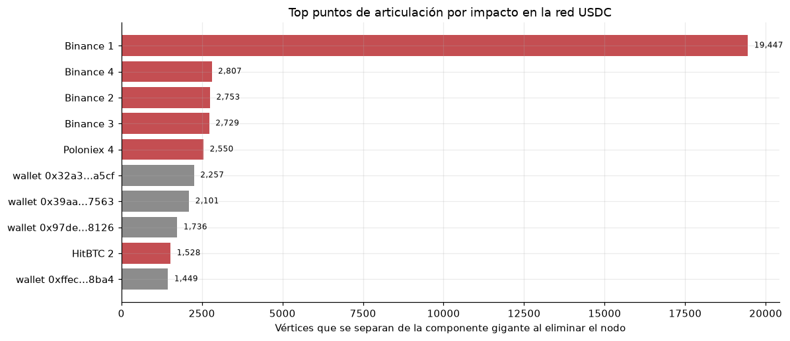
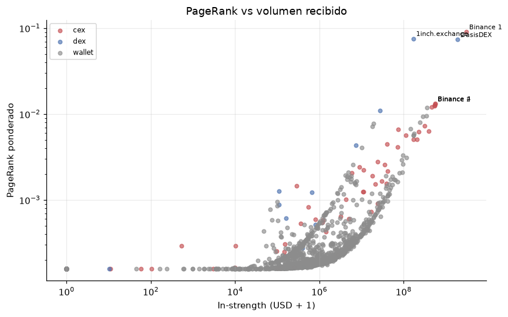
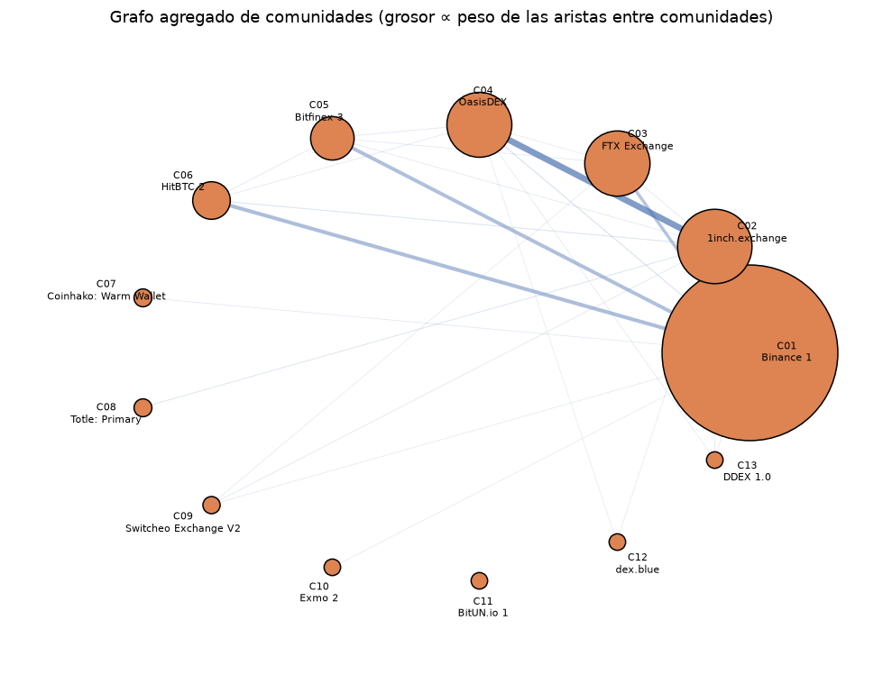
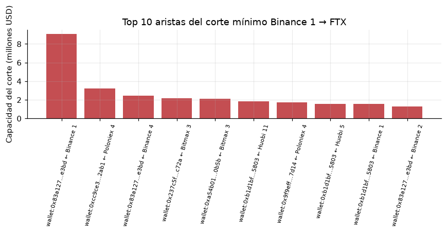

Cuatro lecturas algorítmicas de 38,9 millones de transferencias ERC-20 (2018–2020): conectividad, centralidad, comunidades y flujo máximo.
Eventos Transfer de Ethereum entre los bloques 6.525.201 y 10.000.000 (oct. 2018 – may. 2020). Se usan USDC y DAI para normalizar valor a USD; se excluyen mint/burn (0x000…) y auto-loops.

| Elemento | Valor |
|---|---|
| Transferencias stablecoin | 4.326.261 |
| Con exchange etiquetado | 902.266 |
| Volumen stablecoin total | USD 60.302 M |
| Volumen en grafo de exchanges | USD 16.347 M |
| Exchanges (CEX/DEX) | 296 (247 / 49) |
Datos compactos: 32 MB en data/, generados con preprocess.py a partir del CSV original de 8,3 GB.
Problema real: ¿qué direcciones pueden aislar la liquidez USDC si desaparecen? Modelo: grafo no dirigido G=(V,E), vértices = direcciones, aristas = transferencias. Componente conexa = islote de liquidez; punto de articulación = dirección cuyo fallo parte la red.

La componente gigante concentra 110.596 vértices (56,9 %). El resto son islotes: la red es global pero fuertemente fragmentada. Algoritmos: Union-Find + BFS para componentes; Tarjan iterativo para articulaciones y puentes. Validación: Tarjan vs. fuerza bruta en subgrafo BFS de 300 nodos (coincidencia exacta).
Modelo: grafo dirigido y ponderado por volumen USD; vértices = exchanges + 2.000 contrapartes. PageRank mide la probabilidad estacionaria de un paseo aleatorio con reinicio (d=0,85).

| # | Exchange | Tipo | PageRank |
|---|---|---|---|
| 1 | Binance 1 | CEX | 0,0904 |
| 2 | 1inch.exchange | DEX | 0,0755 |
| 3 | OasisDEX | DEX | 0,0735 |
| 4 | Binance 4 | CEX | 0,0132 |
| 5 | Binance 2 | CEX | 0,0131 |
Comparación: PageRank ponderado vs. no ponderado (Spearman 0,679) y vs. in-strength (Spearman 0,839; solapamiento top-20 = 17/20). El volumen explica mucho, pero no todo: la topología importa.
Modelo: grafo no dirigido y ponderado por frecuencia de transferencias (no por volumen) para evitar que unas pocas ballenas dominen la partición. Louvain maximiza la modularidad Q en dos fases: movimiento local + agregación, con 10 reinicios.

Comparación: Label Propagation obtiene Q=0,605 con 24 comunidades (más fragmentadas); Louvain logra una partición más compacta y con mayor modularidad. La proyección exchange–exchange por billeteras compartidas confirma la fragmentación: solo 88 de 296 exchanges comparten contrapartes principales (6 comunidades, Q=0,149).
Modelo: red dirigida con capacidades c(u,v) = volumen USD agregado. Origen Binance 1, destino FTX Exchange. Por max-flow/min-cut, el flujo máximo es la capacidad del corte mínimo.

Algoritmos: Dinic (BFS de niveles + flujo bloqueante) y Edmonds-Karp (BFS de caminos de aumento). Ambos coinciden en USD 56,85 M y 216 aumentos; Dinic tarda ≈0,015 s vs. ≈0,114 s de EK. Sensibilidad: Binance 1 → Huobi 5 alcanza USD 89,4 M, lo que confirma que la capacidad depende del destino y de las rutas disponibles.
Incorporar la dimensión temporal (grafos mensuales), precios históricos para normalizar todos los tokens y capacidades instantáneas con restricciones de tiempo.
Tarjan (1972) · Page et al. (1999) · Blondel et al. (2008) · Dinic (1970) · Edmonds & Karp (1972) · Raghavan et al. (2007) · ERC-20 (Ethereum EIPs).
Dataset: token_transfers_full.csv + etiquetas de exchanges y pools stablecoin.
Notebook: proyecto_grafos_ethereum.ipynb · Preprocesamiento: preprocess.py · Datos: data/.